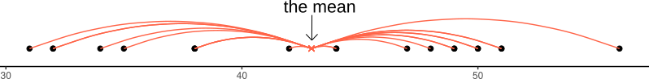

We’ll illustrate measures of variability with the msleep dataset that comes from tidyverse. msleep contains some data about how much different kinds of mammals sleep. Here’s what the first few rows of msleep look like.
msleep |>head()
# A tibble: 6 x 11
name genus vore order conservation sleep_total sleep_rem sleep_cycle awake
<chr> <chr> <chr> <chr> <chr> <dbl> <dbl> <dbl> <dbl>
1 Cheetah Acin~ carni Carn~ lc 12.1 NA NA 11.9
2 Owl mo~ Aotus omni Prim~ <NA> 17 1.8 NA 7
3 Mounta~ Aplo~ herbi Rode~ nt 14.4 2.4 NA 9.6
4 Greate~ Blar~ omni Sori~ lc 14.9 2.3 0.133 9.1
5 Cow Bos herbi Arti~ domesticated 4 0.7 0.667 20
6 Three-~ Brad~ herbi Pilo~ <NA> 14.4 2.2 0.767 9.6
# i 2 more variables: brainwt <dbl>, bodywt <dbl>
Range
The range is the span between the minimum value and the maximum value. We calculate it as max() - min().
To force min() and max() to overlook the NAs in a variable and only use the values we do have, use the code na.rm = TRUE (na.rm stands for “NA remove”).
If we sort our variable and then slice it in half, then at that halfway point, we get the median.
If we sort our variable and then slice it into quarters, then at each quarter, we get the quartiles. (The second quartile is the same thing as the median.)
To see how spread out the data is around the median, we can look at the first quartile and the third quartile and see how far apart they are. The distance between these two quartiles is called the inter-quartile range (IQR).
To find the quartiles, we use quantile(variablename, 0.25) (the first quartile) and quantile(variablename, 0775) (the third quartile). For the inter-quartile range, we can subtract those or just use IQR(...).
Error in `summarise()`:
ℹ In argument: `Q1_rem = quantile(sleep_rem, 0.25)`.
Caused by error in `quantile.default()`:
! missing values and NaN's not allowed if 'na.rm' is FALSE
Run `rlang::last_trace()` to see where the error occurred.
The functions will be happy again if you add na.rm = TRUE.
# A tibble: 1 x 4
Q1_rem Q3_rem IQR_way1 IQR_way2
<dbl> <dbl> <dbl> <dbl>
1 0.9 2.4 1.5 1.5
Variance
Variance is a measure of how spread-out a variable is around its mean.
Think of the spread of the data in terms of the distance of each value to the mean. These distances are called “deviations”.

A first attempt to measure the variance might be to add up these deviations, or find their mean. This should give us a sense of how big they are overall.
However, here’s the problem with that: some deviations will be positive, for all the values on one side of the mean, and some will be negative, for all the values on the other side of the mean. That means that if we add them all up, the positives will cancel out the negatives, and we’ll always get exactly zero, no matter how big or small the deviations all are.
Here’s the solution: first we’ll square these deviations (i.e., multiply each deviation by itself: \(3^2 = 3 \times 3 = 9\)). This works because
a positive number times a positive number = a positive number, AND
a negative number times a negative number = a positive number.
So we square the deviations, and then we can add them up and get a number that’s different from zero, and also bigger, the larger the deviations are (regardless of whether they were originally positive and negative!). In actual practice, we take the mean of these numbers instead of just adding them up. That number—the average squared deviation from the mean—is a variable’s variance.
In R, we use the function var().
msleep |>summarise(var_sleep =var(sleep_total) )
# A tibble: 1 x 1
var_sleep
<dbl>
1 19.8
The downside of variance: its units are “squared deviations”, which is a bit weird to interpret. A more easily interpretable version of variance is the standard deviation (SD).
Like the variance, the standard deviation is a measure of how spread-out a variable is around its mean. Unlike the variance, it has the same units as the original variable. For example: if the mean of mammals’ total sleep time is measured in hours, the standard deviation of mammals’ total sleep time is also measured in hours.
How does this work?
The trick is to first calculate the variance (see above), and then “undo” the squaring operation that gave us positive-only numbers. We can undo this operation by doing its opposite: taking the square root. The square root asks what value, multiplied by itself, produces the given number (for example, \(\sqrt{9} = 3\) because \(3^2 = 9\)).
Now that we’ve undone the squaring operation, we’re back on the original scale that the variable was measured in. That’s good, because it’s a lot easier to interpret both a variable’s central tendency and its spread when both numbers are are on the same scale!
TLDR: the square root of a variable’s variance is that variable’s standard deviation (SD).